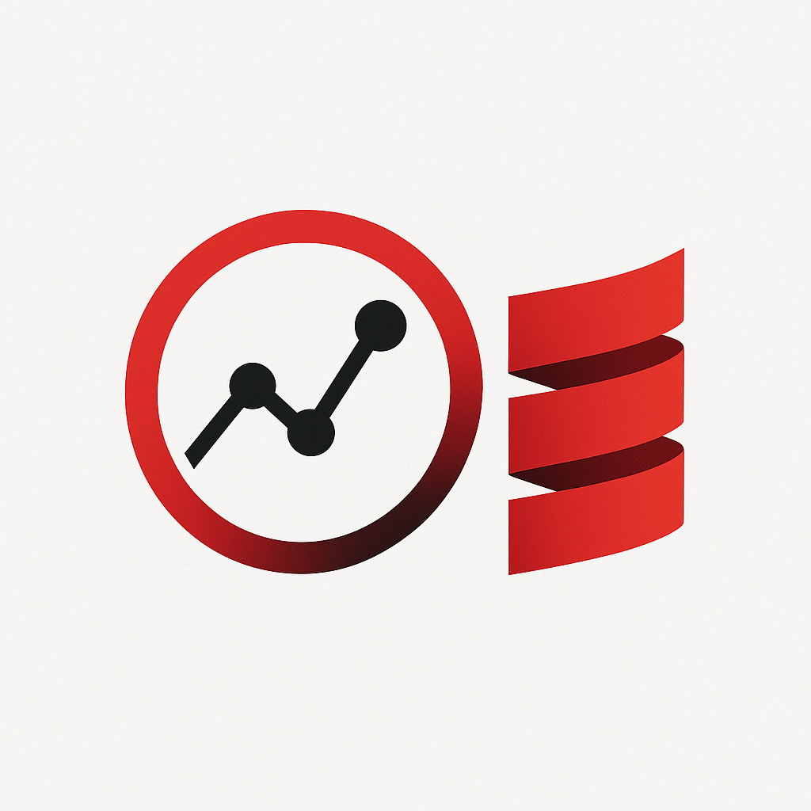

Dotty Visualization Project
Overview
Files and Dependencies
Contributors
Panel 3
Welcome to Dotty Compiler (Scala3)
Source Files and Dependencies, over time
🖱️ Drag nodes to move them • 🔍 Scroll to zoom • 📄 Hover for full path details
Scala Version
Source Directories
Contributors Activity Over Time
Start
End
Commits
Select All
Deselect All
Visualization Panel 3
Panel 3 content goes here.